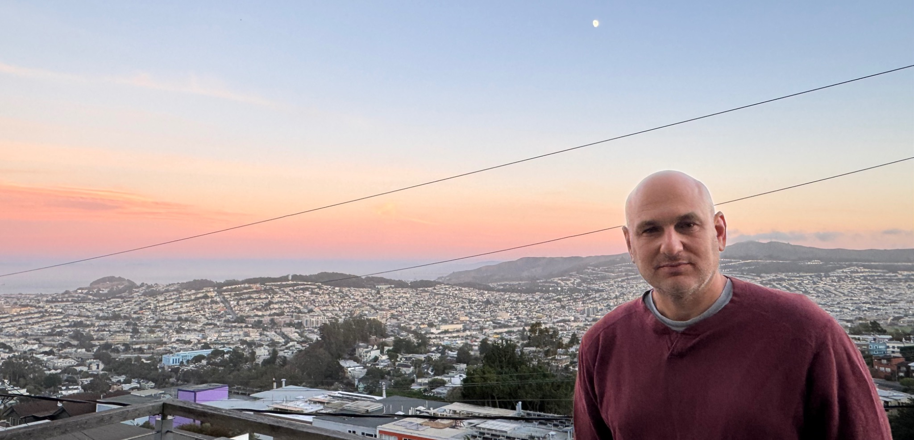

The Last Class (2025)
Director
Robert Reich teaches his final class at the University of California, Berkeley, reflecting on inequality, democracy, and the responsibilities of citizenship.

Work spanning filmmaking, writing, journalism, and the development and production of ambitious media projects.
Robert Reich teaches his final class at the University of California, Berkeley, reflecting on inequality, democracy, and the responsibilities of citizenship.

Americans across generations and backgrounds sit down, ask one another questions, and listen in an experiment in conversation about the country and its future.

The story of CRISPR and the unprecedented power to rewrite DNA, exploring the scientific possibilities and ethical questions that come with it.

An idiosyncratic exploration of current events, history, art, science, and community.
Homepage
Written with Dan Rather, this critically acclaimed book explores patriotism, citizenship, history, and American democracy.
Buy the BookWork across long-form and broadcast journalism, documentary and editorial leadership, and media and communications strategy.
More about my work